In this page I will show how I created this fun project and explain each joint individually. For this project unlike the barbeque scraper research was not needed as we already had a complete design we had to replicate.
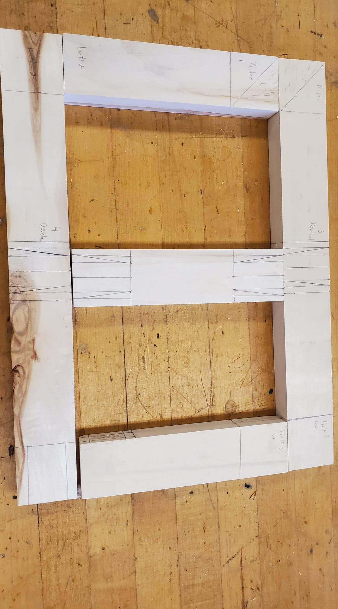
To read more about different joints please refer to the research page at the top.
Probably the easiest joint to make. A butt joint is a joint that is connected by taking to pieces and just butting them together. On the longer piece I have cut of two inches because the width of the pieces of wood are two inches. I then put the smaller piece in the place of where the two inches were cut from.
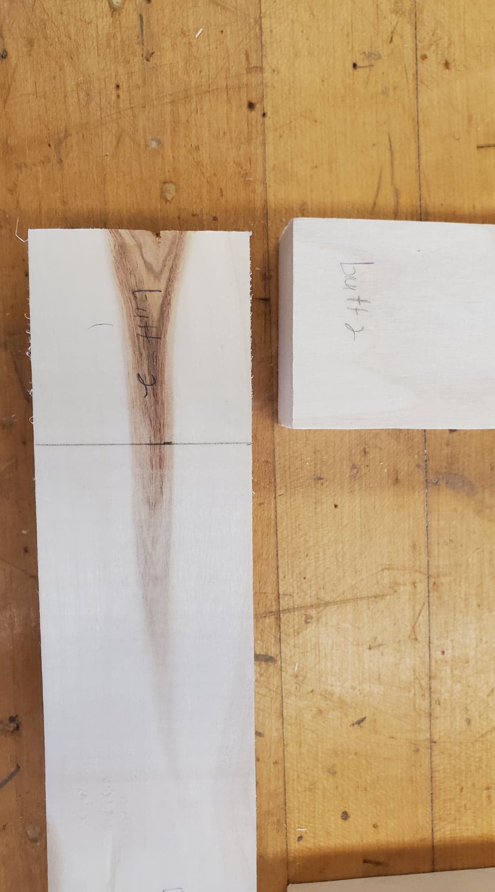
To stabilize it better I then took the smaller piece of wood and made a hole right in the middle of the two inches it overlaps using the drill press.
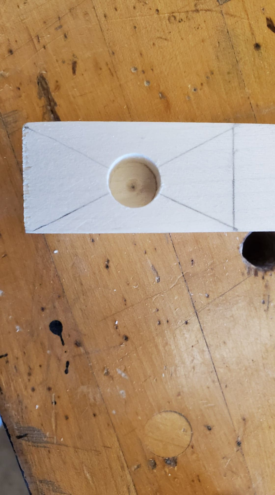
I then held the two pieces together with a clamp, drilled a hole through them with a hand drill, added glue, and screwed a screw once again with a hand drill.
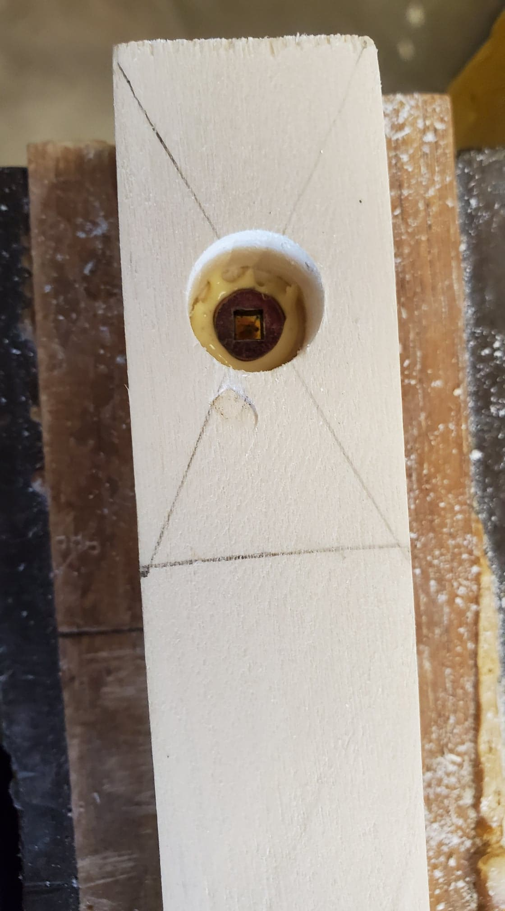
Then put more glue above the screw, took a small piece of wood and put it in.
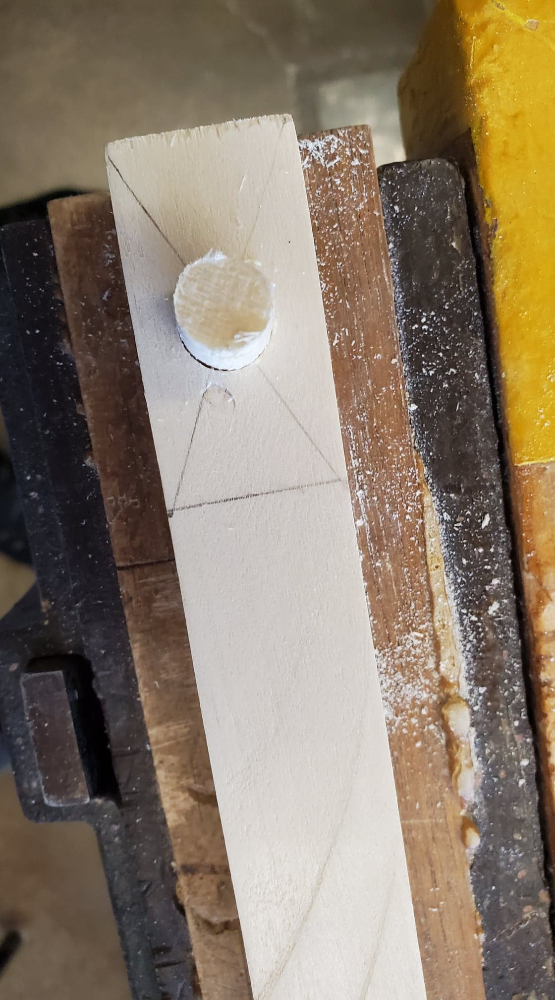
After putting the piece of wood I chopped whatever popped out with a saw and have finished the butt joint. I have not glued or screwed the other joints.
Also a very easy joint to make is the mitre joint. Firstly I drew the lines on the two pieces of wood I needed to cut. I drew a 45 degree line starting at the corner at spanning two inches in width and height.
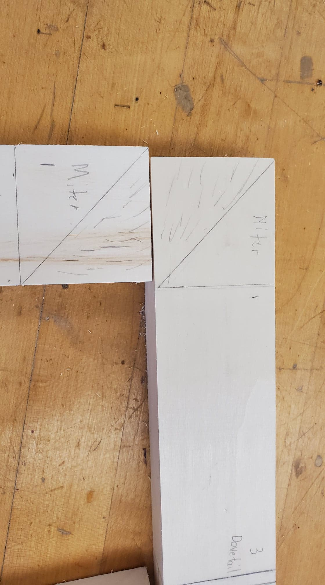
Then I used a mitre saw and cut on the lines by lining up the cut line under the saw turning the machine on and pressing down on the machine until it cut through.
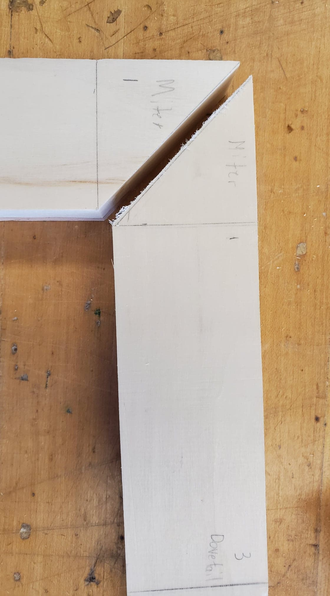
To create the half lap joint I took the two pieces I needed for the joint and on the two inches it will overlap I drew a line straight across the middle of the height. In my example the pieces were one inch thick so I drew the line one half inch up.
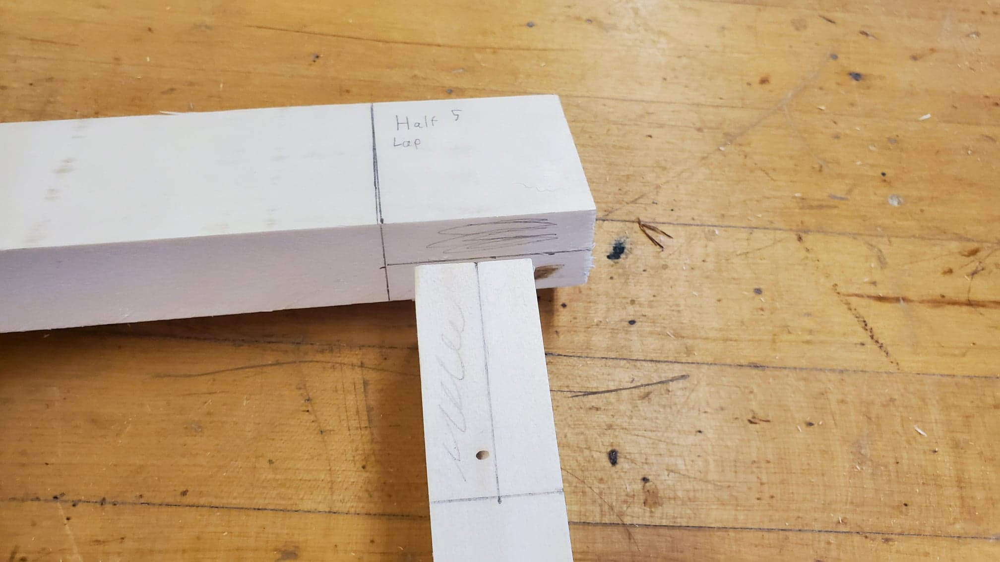
I then went on to the table saw with a dado blade and set the height of the blade for half the thickness of the wood and the distance of the blade from the side to two inches. I pushed my pieces of wood a small part at a time on to the blade until the half lap was done on both sides. Here is how it looked at the end.
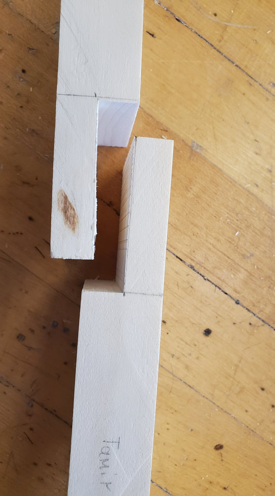
Just as in all the other joints, the first step in creating this joint is to draw the lines on the wood. For the mortise and tenon I went to the edge and drew lines 3/8" from the left and right side and 1/4" from the top and bottom to create the rectangle which will let the tenon go in the mortise.
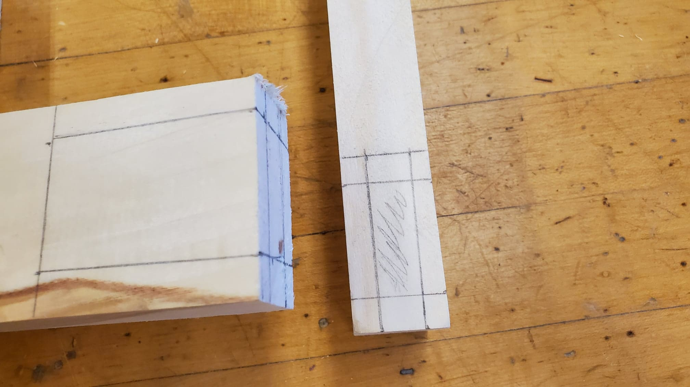
I then went over to the table saw with a dado blade and set the height of the blade to 3/8" and the width to 2". After setting the measurements, I put the longer piece of wood on the table which will be the tenon, turned on the machine and a small bit by bit I pushed my wood across the blade then moved the wood a bit to the right and did it again until the blade cut of 2". Then flipped the piece of wood and did the same thing to the other side. Once again I changed the height of the blade this time to 1/4" placed my wood on the table pressed hard with my left hand while with my right pushed the wall that held the wood in place and did the same as before. I then went to the band saw and cut off 3/4" as it will only overlap 1 1/4" and not the full two. I drew a line 3/4" inch from the side went to the band saw, turned on the machine and with my hands out of the way I pushed my wood through cutting on the waste line. When I finished cutting I turned off the machine, wait for the blade to stop, and took my wood.
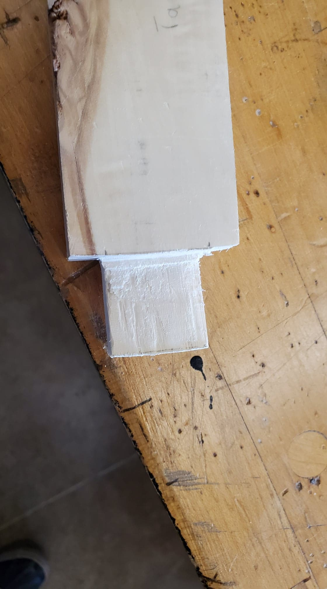
After finishing my tenon I moved to my mortise. For the mortise cut I went to the mortise press. I placed my wood down between two walls, adjusted the place of my wood so the blade will be exactly above the bottom right corner. I turned on the machine moved my finger out of the way and pressed down on the handle so the blade would cut my wood. After it cut the bottom right corner, I moved my wood to the right so the machine will continue cutting. After reaching the bottom left corner I turned the machine off and turned my wood around so the blade will be above the top right corner. I did the same as before and my mortise cutting from top right to left until the reaching the top left corner. I then turned off the machine removed my wood and the mortise joint was complete.
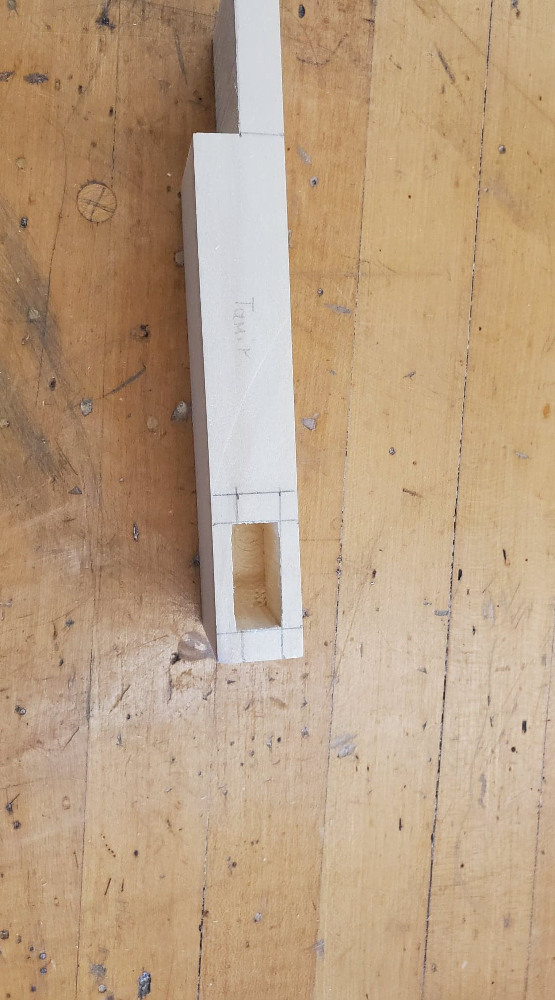
Now my mortise and tenon joint was complete.
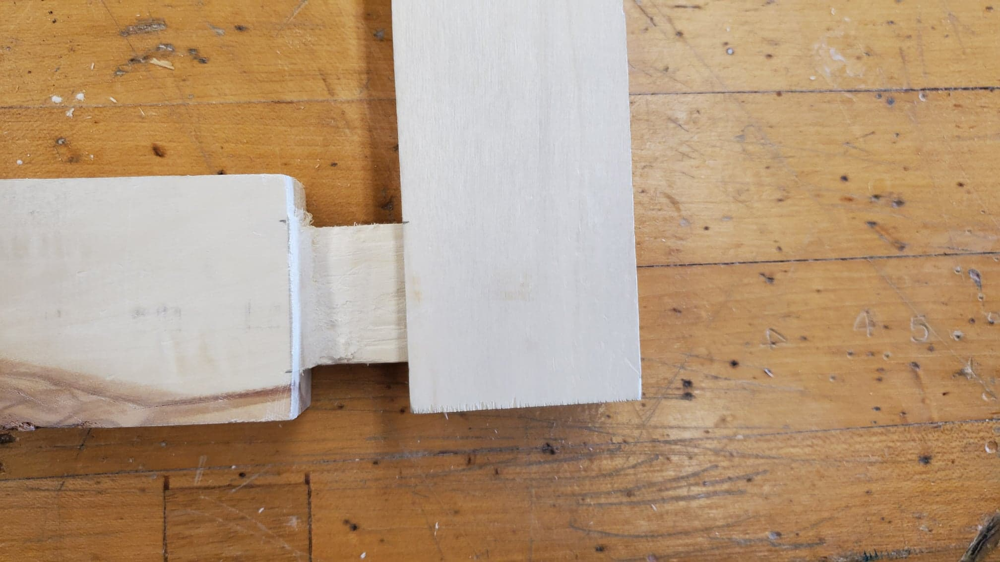
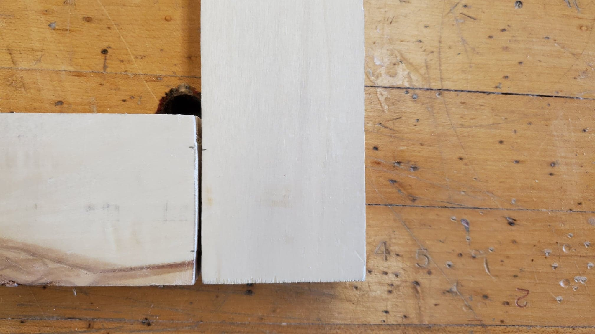
The hardest joint for me was definitely the dovetail joint. While there are machines to create this joint, we didn't have them at our school so we had to create them by hand. Once again I firstly drew the lines.
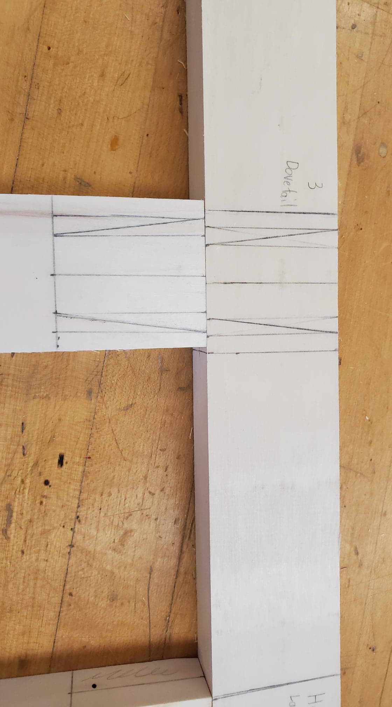
The shorter part of the dovetail was one inch long, the long part was 1 1/2", and the depth was 1/2".
To do the part of the dovetail joint that goes over we first have to take the piece of wood to the table saw with a dado blade. You set
the height of the blade to 1/2" so it will cut the bottom 1/2" and be able to overlap with the other piece of the joint which will have a depth of 1/2". Then you set the width two inches and begin. Just as before you press hard with your
left hand while your right hand pushes the wall that the wood is stacked on and do that multilple times until you have cut two inches of the bottom. Since we are making two dovetail joints you then flip the piece of wood and do the same
thing to the other side.
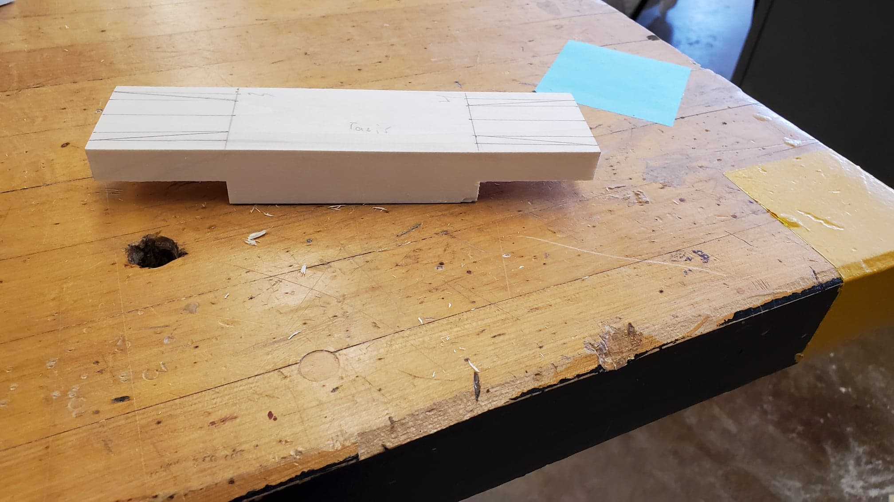
You then take the piece of wood to the band saw to angle the top part of the joint. Once you are on the band saw you turn on the machine and cut on the waste line, the two long lines the make the trapezoid shape. You then cut the small line between the edge and the bottom of your joint so the waste pieces would fall off. I then took a rasp to remove some wood to the pencil line, since I cut on the waste line with the band saw, and this is how it looks now.
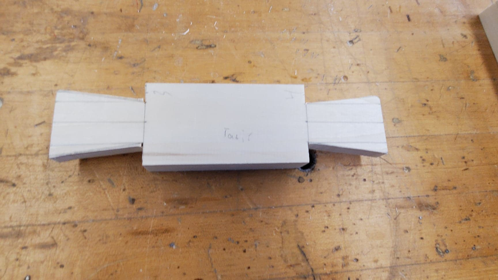
For the lower part of the dovetail I took a saw and inside the pencil drawn shape on the wood I cut many lines to 1/2" in depth. I did this so I could then remove the wood between the saw lines with a chisel and the dovetail joint would
be complete. That is easier said than done because after the long time of sawing straight lines in the wood came the even longer time of remove and straighting the wood with a chisel. After I finished that I used rasp to remove some wood
from the sides of the cut so the hole would be bigger. I continued using the rasp until the dovetail joint fit inside. The process of creating the dovetail joint took hours and was definitley the hardest joint and the one I made the most
mistakes with.
I then did the same thing for the other side.
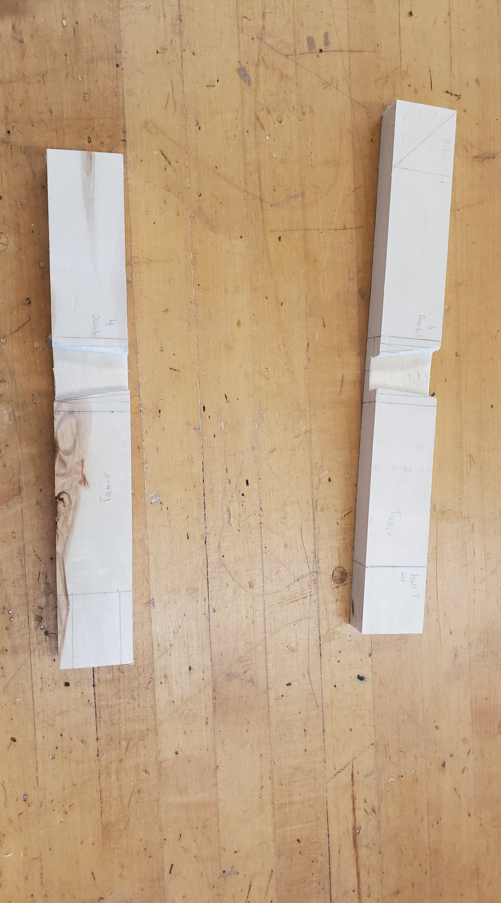
And the dovetail fit.
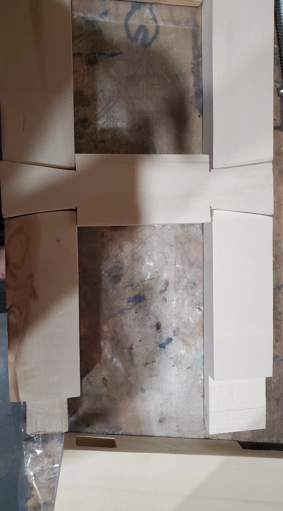
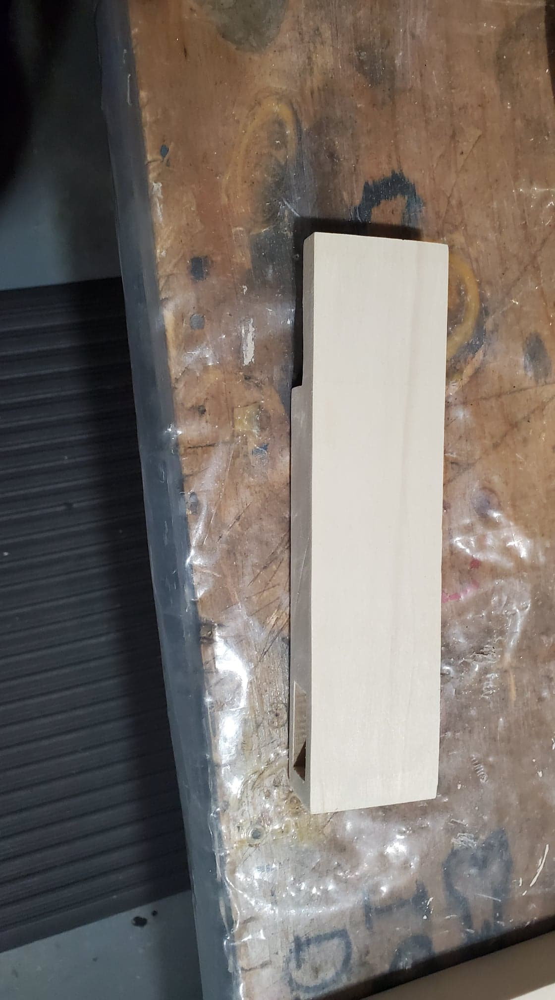
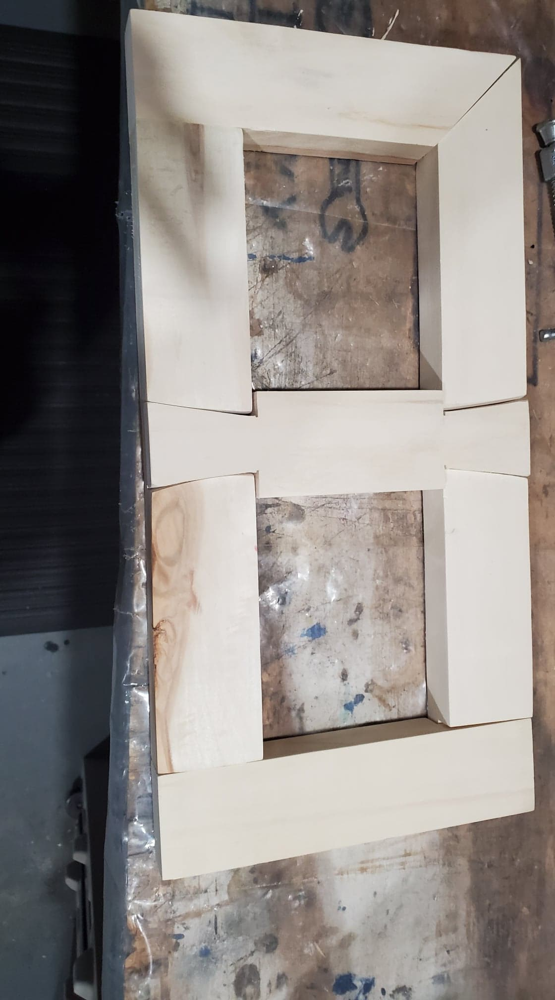